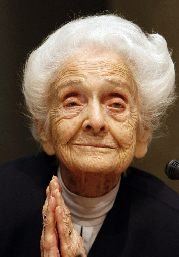

Rita nasce il 22 aprile del 1909 a Torino, ma non inizia la sua vita da sola: nasce con lei anche sua sorella gemella Paola. Nate in una famiglia ebrea sefardita, sono figlie di un matematico e ingegnere elettrotecnico, Adamo Levi, e di una pittrice, Adele Montalcini. Rita dirà che dai suoi genitori ha ereditato l’apertura verso il prossimo senza asti e una sorta di tendenza all’ottimismo. Allo stesso tempo, però, nella sua famiglia era ancora presente la suddivisione tra uomini e donne e queste ultime dovevano necessariamente diventare delle mogli, più che concentrarsi sulla carriera.
Rita si iscrive nel 1930 (dopo essersi scontrata a lungo col padre) presso l’Università di Torino alla facoltà di Medicina, la scelta è forte perché motivata dalla scomparsa della sua governante a causa di un tumore proprio in quello stesso anno. Inizia da subito gli studi sul sistema nervoso, entrando nella scuola medica di Giuseppe Levi e durante questi anni condivide gli studi con due giovani che sarebbero diventati come lei altri due grandi scienziati italiani: Renato Dulbecco e Salvatore Luria.
Rita, Renato e Salvador dichiareranno sempre di aver imparato grazie al Professor Levi cosa sia il vero rigore scientifico.
A 27 anni Rita consegue la Laurea Magistrale in Medicina e Chirurgia con 110 e lode e sceglie di continuare a specializzarsi sia in neurologia che in psichiatria
Rita studia gli embrioni di pollo ormai da anni e un giorno nota qualcosa che le appare strano: le cellule nervose non si spostano tutte seguendo la medesima direzione, ma si differenziano a seconda della zona dell’embrione in cui finiscono, molto tempo dopo la loro nascita. E addirittura, se ci sono delle cellule in eccesso, ne arrivano altre a portarle via eliminandole. Rita ha davanti a sé le prime evidenze del processo di neurogenesi e capisce che deve esserci un fattore chimico attivo sullo sviluppo dei neuroni.
Nel 1954, insieme al suo allievo biochimico Stanley Cohen, Rita riesce a isolare una proteina che viene prodotta da quasi tutti i tessuti e in particolare dalle ghiandole esocrine, che viene chiamata Nerve Growth Factor, è il famoso NGF, e nel 1986, insieme a Stanley Cohen, vince il Premio Nobel per la Medicina e la Fisiologia proprio per la scoperta dell’NGF, negli anni successivi torna a dare una mano al CNR e viene nominata ambasciatrice per la FAO.
A 90 anni a causa di una maculopatia degenerativa Rita diventa parzialmente cieca, e nel 30.12.2012, muore all’età di 103 anni.
.jpeg)
.webp)